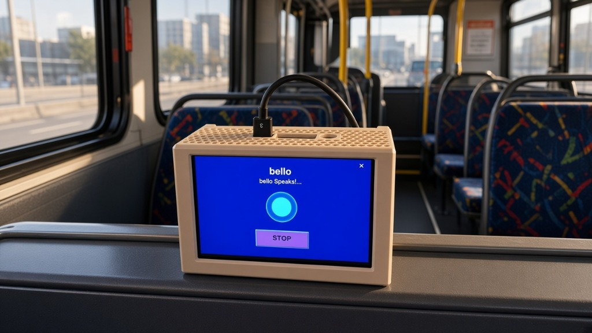

bello
bello Spreekt!...
"Hallo! Klik op de microfoon of luidspreker om te praten over verkeer en weer!"
Een interactieve sociale robot met lokale AI-spraakherkenning, ingebouwde luidspreker en demonstratiescherm. Bello haalt actuele verkeersinformatie en weerberichten op via openbare APIs, terwijl 100% van alle spraak- en persoonsgegevens in het apparaat blijven voor strikte AVG/GDPR bewaring.

De Bello hardware is speciaal ontworpen voor gebruik onderweg in het openbaar vervoer en auto's. Reizigers krijgen direct gesproken verkeersupdates, halte-informatie en weerwaarschuwingen zonder dat hun stem of locatie naar externe servers wordt verstuurd.
Praat met Bello via spraak of voorbeeldscripts. Bello begrijpt vragen lokaal, spreekt via de luidspreker, en haalt live verkeers- en weer-APIs op.
Alle audioverwerking en spraak NLU-modellen draaien strikt op het apparaat in uw browser.
Alleen weer- en verkeersgegevens worden opgehaald via openbare APIs. Er wordt 0% identiteit of spraak verzonden.
// Uitgaande API-logs verschijnen hier
Spraakherkenning en HD text-to-speech voeren volledig uit binnen het lokale systeem zonder externe cloud-servers.
Bello heeft een helder display voor snelle visuele verkeersmeldingen, weersamenvattingen en statusiconen.
Haalt actuele snelwekinformatie, file-updates en weersverwachtingen op via openbare bronnen.
Persoonlijke scripts, audio-opnames en voorkeuren blijven strikt in de lokale kluis. 100% AVG compliant.
In tegenstelling tot traditionele AI-apparaten die uw stem opslaan op cloudservers, verwerkt Bello spraakscripts lokaal. Alle spraak-cache en reisvoorkeuren blijven strikt in het apparaat.
Uitgerust met lokale AI-spraakengine, demonstratiescherm, ingebouwde luidspreker, verkeer/weer integratie en AVG privacy bewaring.